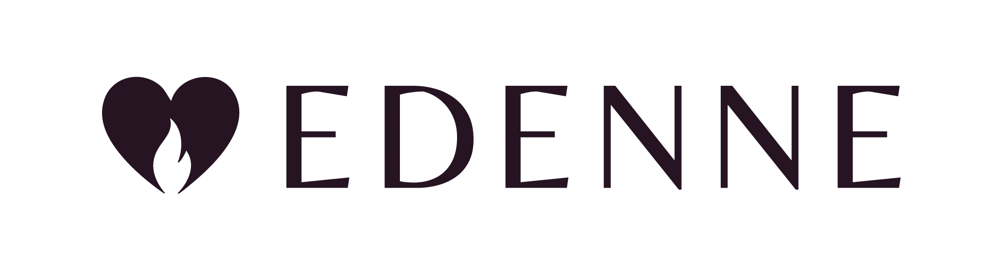
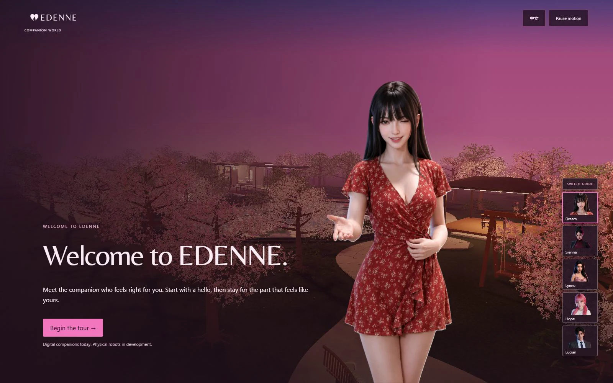
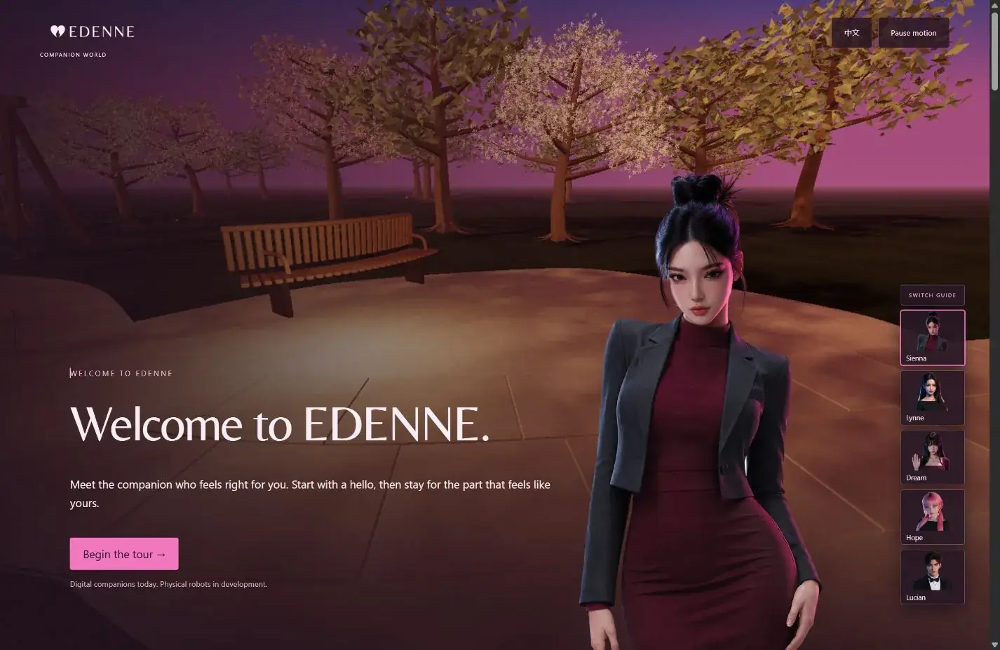
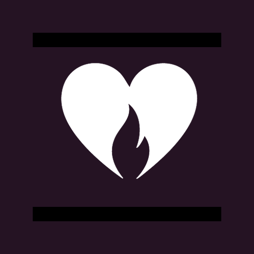
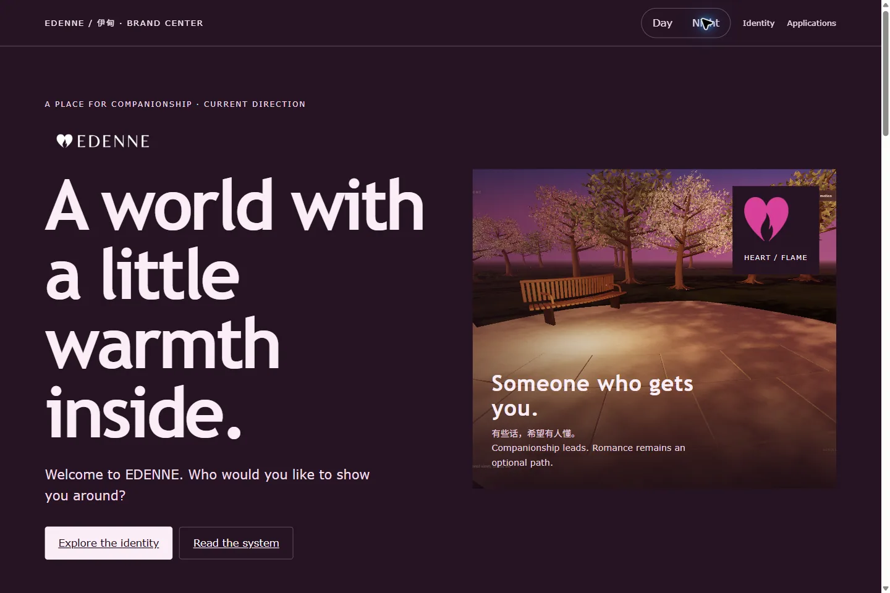
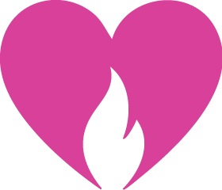

Companionship · Identity & spatial experience

A place
for presence.
An independent companion world, shaped around welcome, character and continuity.

Edenne
Companionship · Identity & spatial experience
- Brand strategy
- Visual identity
- Spatial UX/UI
An emotional intention.
A world to enter.
Goal
Create a welcoming sense of companionship and continuity.
Solution
Connect the heart-and-flame identity, characters and spatial journey into a coherent world.
Warmth. Character. A living world.
Identity
The supplied heart-and-flame mark.
Atmosphere
Blossom by day. Fuchsia by night.
Presence
Original characters in their own world.
The palette
- Day ground#FAEDF5 · Day
- Plum#392335 · Day text
- Blossom#FF9BD3 · Day accent
- Night ground#251323 · Night
- Fuchsia#D8419A · Night accent

The work


The mark


Notes
Independent Edenne identity and spatial prototype. Original characters and environment retained. Physical products, working memory and commercial outcomes are not implied.
Have a similar business problem?
Bring us the problem.
You do not need to know which service you need. Start with the problem, or run the free audit and let the evidence choose the next step.